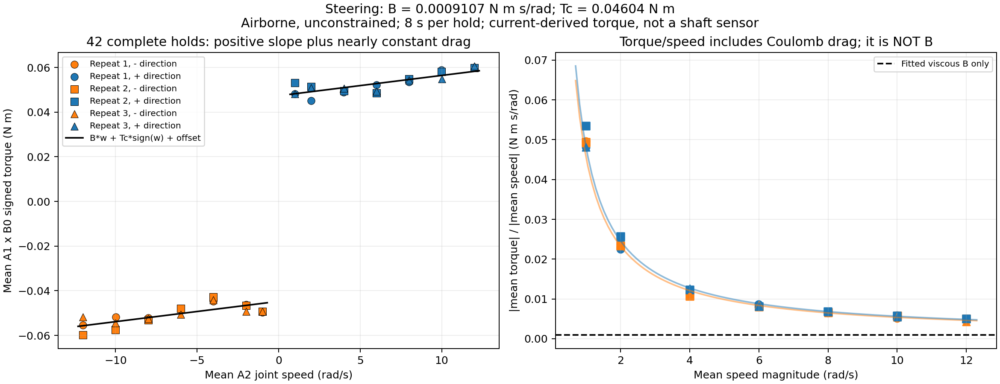
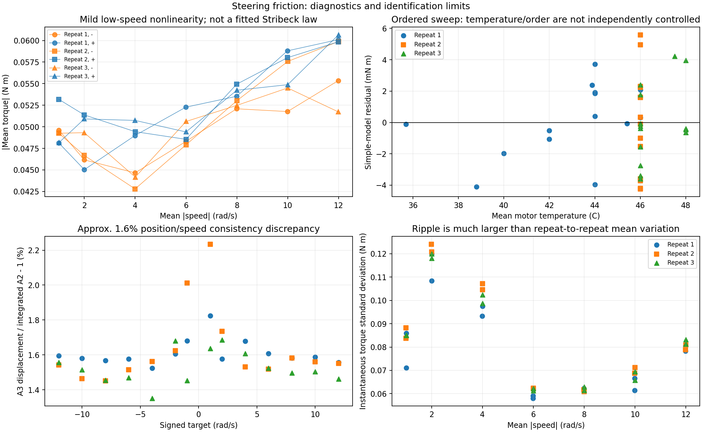
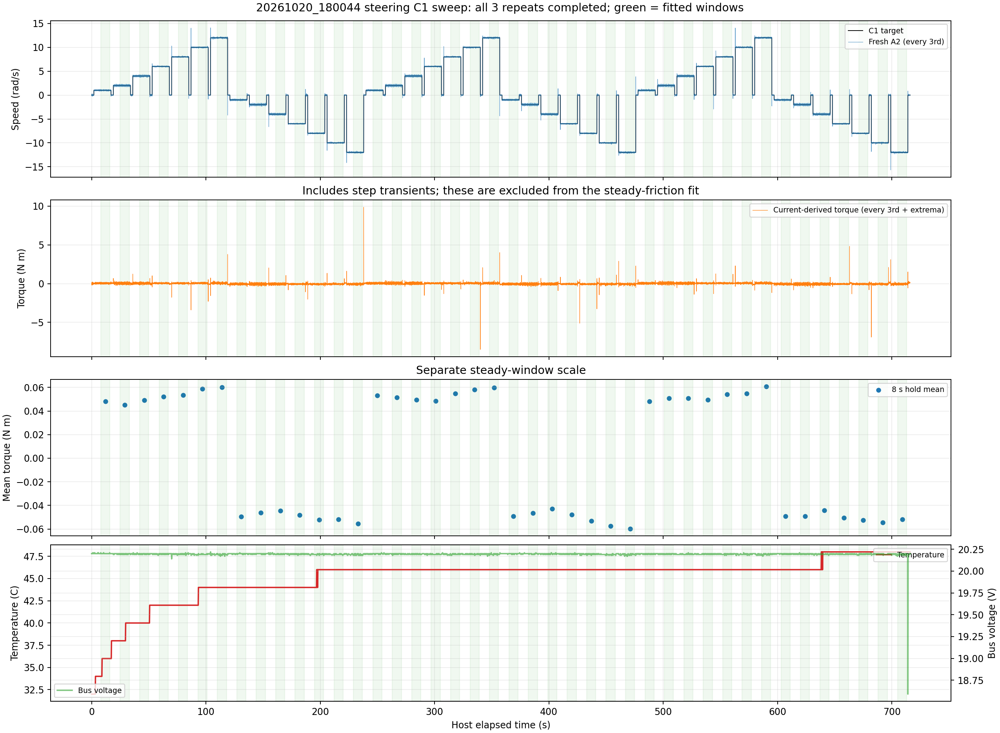

42 complete holds. B=0.000910713 N m s/rad; moving friction=0.046036 N m. Airborne, unconstrained; current-derived estimates. Static friction is not measured.
Full report / caveats | Plateaus | Numerical summary


